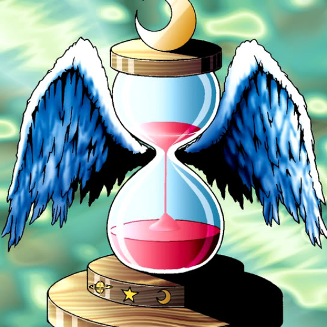

Hourglass of Life

Description: "If LP is higher than 1000 at the moment this card is destroyed, a maximum of 4 monsters with the highest ATKs from own as well as opponent's Graveyard are revived under owning player's control. Following the revival, the owning player's LP is reduced by 1000."
STATS
ATK: 700
DEF: 600DECK COST
Deck Cost per Card: 18EFFECT NOT IMPLEMENTED
Fusion List (13 Possible Fusions)
- Hourglass of Life + Dancing Elf = Mystical Elf
- Hourglass of Life + Dark Gray = Garvas
- Hourglass of Life + Enchanting Mermaid = Dark Witch
- Hourglass of Life + Fusionist = Garvas
- Hourglass of Life + Gate Deeg = Garvas
- Hourglass of Life + Hibikime = Musician King
- Hourglass of Life + Milus Radiant = Garvas
- Hourglass of Life + Key Mace = Dark Witch
- Hourglass of Life + Obese Marmot of Nefariousness = Garvas
- Hourglass of Life + Princess of Tsurugi = Dark Witch
- Hourglass of Life + Vishwar Randi = Dark Witch
- Hourglass of Life + Water Magician = Dark Witch
- Hourglass of Life + Wing Egg Elf = Mystical Elf